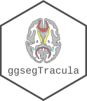

Quick instructions for AI coding agents working on ggsegBrainnetome
Source:.github/copilot-instructions.md
This is a ggseg 2.0 atlas package providing brain atlas data for the ggseg ecosystem. It is a data-only package with no custom functions.
Architecture
-
data/*.rda–ggseg_atlasobjects (2D polygon geometry) -
R/brainnetome.R– Roxygen2 documentation for the atlas -
R/ggsegBrainnetome-package.R– Package-level docs, imports ggseg.formats -
R/sysdata.rda– Internal palette data (brain_pals) -
data-raw/– Scripts that generated/converted the atlas data
Key dependency
This package depends on ggseg.formats which provides the ggseg_atlas class. This atlas provides 2D data for ggseg::geom_brain() only (no 3D vertex data).
Developer workflows
- Update docs:
devtools::document() - Run tests:
devtools::test()(testthat edition 3, describe/it style) - Full check:
devtools::check() - Build pkgdown site:
pkgdown::build_site()